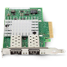
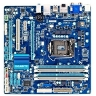

21st December 2015Dual NICs on Linux
 Normally, I setup virtual machines with a single network card; using multiple NICs raised some routing problems, and the solution was not immediate.
I have added two blog entries, one on setting up a Debian or CentOS machine with multiple network cards, and other on assigning correctly the hostname via DHCP to a CentOS machine, setup as well with dual ethernet ports.
21st December 2015Reading point


 Not much of interest this time, just a case of books shoveling.
Not much of interest this time, just a case of books shoveling.
But one stands out: Strange weather in Tokio, by Hiromi Kawakami: sad, melancholic, and pure delicacy.
18th October 2015TableFilter v5.2.1
 New release for this
Java library, solving one important problem, affecting the definition
of new models on existing tables.
New release for this
Java library, solving one important problem, affecting the definition
of new models on existing tables.
It is in fact a regression problem, where I had obviously missed the associated regression test :-(
5th August 2015TableFilter & IntelliJ Idea
I requested a few weeks ago an Open Source License for IntelliJ Idea, based on my TableFilter project, and I received it two weeks later.
Just in time to work on a new issue found on the library: Wrong filter value when AutoChoices is enabled, which happened in fact when instant filtering was on. So there is now a new release, gladly developed using the new IDE: version 5.1.5
18th July 2015SSH daemon port
I am totally sold to the explanations on why putting SSH on any other port than 22 is a bad idea but it is my experience that keeping enabled the port 22 is asking for problems. It can be restricted to explicit IP addresses, etc, but, otherwise, changing the port seems a sound idea. Mind you, it is probably just discarding the unexperienced vector attacks, but even so, unless you are the unique user in that machine and keep a good password policy, a vector attack can eventually score, so disabling the port 22 and moving anywhere else can indeed help.
In Debian Jessie (8.x), it is just needed to link the ssh daemon itself and ensure that the configuration files for the duplicated daemon are in place; the following procedure does not remove the access to port 22, it is your responsibility to disable it or to enhance its security (like limiting inbound IPs, etc). See the whole procedure here
12th July 2015Ubuntu workspaces
I like enabling workspaces in Ubuntu, and then my favourite shortcuts are Super+number workspace to switch to the given workspace.
It is possible to open the preferences, go to keyboard and then update the navigation shortcuts so that 'Switch to workspace 1' is done with 'Super+1', and so on. But this won't work, because the launcher uses directly Super - so Super + 1 launches instead the first application in the launcher, Super + 2 the second one and so on.
However, these shortcuts are not editable in the preferences. Instead, it is needed to install CompizConfig Settings Manager, launch it and select Ubuntu Unity Plugin. Under Launcher, the default key to show the dash Launcher and Help Overlay is Super. Change this to something else, like Alt+Super, and the shortcuts for Workspace navigation will work as expected!
12th July 2015Reading point


 Only one audiobook in the last months -that I finished, in fact I started a few others that I considered not good enough-, devoting much more time to paperbacks. And the focus was on fiction, with a lot of AI: snowcrash, and even better, Revelation Space. The counter weight was Winter of the World, still fiction, but with a lot of historic background.
Only one audiobook in the last months -that I finished, in fact I started a few others that I considered not good enough-, devoting much more time to paperbacks. And the focus was on fiction, with a lot of AI: snowcrash, and even better, Revelation Space. The counter weight was Winter of the World, still fiction, but with a lot of historic background.
1st June 2015libguestfs-tools
Using KVM on Debian, I have prepared some scripts to perform usual tasks with images, and some of those scripts rely on the package libguestfs-tools to do the heavy tasks, such as resizing partitions in the images. The scripts run perfectly in Debian Wheezy, but in Debian Jessie, I was surprised with the error message:
virt-resize: error: libguestfs error: copy_device_to_device: /dev/sdb2: write: No space left on deviceWhich seems to be an existing bug, already solved. I could compile myself the sources, or try the package distributed in Debian Sid, with version 1.28.10 instead of 1.28.1, but I had no idea on how to install a specific package from Sid. The best answer was in this thread:
mv /etc/apt/sources.list /etc/apt/sources.d.list/jessie.list echo "deb http://debian.mirror.root.lu/debian/ sid main" \ > /etc/apt/sources.d.list/sid.list echo APT::Default-Release \"jessie\"\; \ > /etc/apt/apt.conf.d/99defaultrelease
With these changes, I differentiate the usual sources, which get precedence against the unstable ones, that contain only Debian Sid
apt-get update apt-upgrade apt-get -t sid install libguestfs-tools
This strategy is general to use a second set of sources. It can cause side effects, obviously, so it should be used in limited cases, specially when installing packages with many dependencies. In my case, it installed version 1.28.10 which solved my problem with virt-resize.
5th May 2015Moving to Bitbucket
With the incoming demise of Google Code, I had to move my TableFilter Java library out. The easy move was to migrate the code to Github, as Google provided a script to do the move at once, but that would mean leaving Mercurial and embracing Git. Mind you, that would be all but a dramatic decision: it must be impossible to work with source code without using Git -in fact, the opposite is probably not the case for Mercurial-. But all things considered, I wondered why not giving Bitbucket a shot and stay with the minor number of changes.
The move to Bitbucket was totally painless. As soon as the hosting was different, this meant updating the pom files for the project, updating some documentation, etc. So now the library has a new home. Farewell, Google code.
18th March 2015TableFilter v5.1.2
New release for this
Java library, solving two minor issues. Previous release was 21 months ago, and
there is currently just one issue open to support multi-choice filters.
With the closure of Google code, where this project is hosted, I need to evaluate whether moving it to Github or Bitbucket. I favor Mercurial, so most likely Bitbucket will be the destination.
17th December 2014MacMini upgrade
 I decided recently to upgrade my forgotten MacMini model from 2006. As opposed to the current model, this machine was fully upgradeable, including not
not only the memory and hard disk, but also the CPU.
I decided recently to upgrade my forgotten MacMini model from 2006. As opposed to the current model, this machine was fully upgradeable, including not
not only the memory and hard disk, but also the CPU.
The original processor was a Core Duo (32 bits), and the upgrade to a Core 2 Duo with 64 bits and far better performance was only 16 euros in eBay. Increasing the memory to 2 Gb required another 15 euros on Amazon, and I had a spare SSD with 128 Gb, so the full upgrade was cheap, although definitely took me longer than expected.
The upgrade included fiddling with the EFI -otherwise my USB 2.0 keyboard would not be recognised-, and then installing a new OS using the CD-ROM, instead of the usual USB approach. After some considerations about using FreeBSD, I decided to install Ubuntu 14.10 server (64 bits) - OsX was never an option, and, in any case, the latest version of OsX that could be installed in this machine would have been OsX Lion.
Even then, there was a minor problem: the EFI is 32 bits, and its just refuses to boot from a UEFI(X64)+BIOS bootable CD/DVD, which is precisely the format of the Ubuntu server installation disc. There is a solution: to remove UEFI support from the CD first.
The whole process is documented here.
15th December 2014Listening point


 While reading two paperbacks -which I am still distant to complete-, I had again more time to listen to audiobooks, and the last four where a mixed bag.
Julian Barnes made definitely for any time lost with the deceptive Maze Runner trilogy,
and The Safe Man by Michael Connelly was a nice and unexpected surprise from this author.
While reading two paperbacks -which I am still distant to complete-, I had again more time to listen to audiobooks, and the last four where a mixed bag.
Julian Barnes made definitely for any time lost with the deceptive Maze Runner trilogy,
and The Safe Man by Michael Connelly was a nice and unexpected surprise from this author.
9th November 2014Yosemite on GA-B75M
 I updated my Mountain Lion installation to Mavericks just one month ago;
I knew that Yosemite was on the pipeline, but I still thought that the very first release of Yosemite would have quite a few bugs, as
to rush to install it.
I updated my Mountain Lion installation to Mavericks just one month ago;
I knew that Yosemite was on the pipeline, but I still thought that the very first release of Yosemite would have quite a few bugs, as
to rush to install it.
Looking to the screenshots from Yosemite, I decided to try it on a separate hard disk; if I had problems or the looks didn't suit me that much, I could revert to Mavericks, or, as I have planning all along, to switch to Ubuntu 14.10.
As it happens, the Yosemite installation was really fast on my Hackintosh, and it looks much much better than Mavericks, so it is a keeper. I partitioned my SSD to use now as well Ubuntu, so let's see where I spend more time of both operative systems...
8th November 2014Samsung EVO 840 performance restoration without Windows
 The firmware update provided by Samsung to restore the performance on the Samsung EVO 840 is, as usual for firmware / BIOS updates, a DOS program. There is also a Windows program, but it handles only NTFS partitions, so even in the case of having some Windows installation available, it seems to be unable to handle other partitions, like ext4 or HFS+. In these cases, it is definitely needed to go the DOS route.
The firmware update provided by Samsung to restore the performance on the Samsung EVO 840 is, as usual for firmware / BIOS updates, a DOS program. There is also a Windows program, but it handles only NTFS partitions, so even in the case of having some Windows installation available, it seems to be unable to handle other partitions, like ext4 or HFS+. In these cases, it is definitely needed to go the DOS route.
The update from Samsung does not include, as expected, a DOS installation, but the process is very simple: download and install a FreeDOS (for example) image to a USB stick, add the firmware update and reboot the machine, booting from the USB stick.
This site contains images of FreeDOS available for different USB sizes. For drives over 2 GB, the current download is: http://ftp.chtaube.eu/pub/FreeDOS/bootable-usb/FreeDOS-1.1-memstick-2-2048M.img.bz2
After download, open the terminal and access the downloads folder, and the unzip the file:
bunzip2 FreeDOS-1.1-memstick-2-2048M.img.bz2
Insert now the USB drive and get the device name; this can be accomplished in several ways; the easiest one is, from the Os X command line, to do:
diskutil list
In my case, I can see that /dev/disk4 is a 16GB drive, with one partition (disk4s1). The first step is to unmount this drive, and then transfer the image:
diskutil unmountDisk /dev/disk4 sudo dd if=FreeDOS-1.1-memstick-2-2048M.img of=/dev/disk4 bs=512k
After some time (over 10 minutes, in my case), try reinserting the disk, which should appear as FreeDOS. Open it; now we can copy here the directory 840Per included in the provided Samsung 840 distribution. Time to reboot, and start the firmware update application!
2nd November 2014Locale issues
 Whenever I setup a new system, the usual problem with the locale bites me, something along:
Whenever I setup a new system, the usual problem with the locale bites me, something along:
warning: cannot set LC_CTYPE locale warning: environment variable LC_CTYPE is UTF-8 warning: please check that your locale name is correct
In Os X or Linux, the best solution is to edit the file ~/.bash_profile, adding for English UTF:
export LANG="en_US.UTF-8" export LC_COLLATE="en_US.UTF-8" export LC_CTYPE="en_US.UTF-8" export LC_MESSAGES="en_US.UTF-8" export LC_MONETARY="en_US.UTF-8" export LC_NUMERIC="en_US.UTF-8" export LC_TIME="en_US.UTF-8" export LC_ALL=
Instead of en_US.UTF-8 is possible to just use C, or any other locale as provided by locale -a
In Debian, to ensure that the appropiate locale are installed, it is needed to run dpkg-reconfigure locales, and there select en_US.UTF-8 -also as default-.
12th October 2014KVM network restart
 While working with KVM virtual networks, it arises often enough the need to edit the network definition, like editing new MAC / IP mappings. This causes all the associated guests to lose network connectivity, and it is required to detach / re-attach their network interfaces. There is a shell script to perform this operation on the default network, with a few constraints.
While working with KVM virtual networks, it arises often enough the need to edit the network definition, like editing new MAC / IP mappings. This causes all the associated guests to lose network connectivity, and it is required to detach / re-attach their network interfaces. There is a shell script to perform this operation on the default network, with a few constraints.
To avoid those constraints and allow the attachment of any network, I wrote the following python script, that requires as arguments the network or networks to reattach: (permanent link)
5th October 2014Mavericks on GA-B75M
I created my first Hackintosh in 2009, and the process required some thinking. There were already quite a few guides, and, of course, some people had done already the dirty work of working out the drivers and the mechanisms to make Os X install on alien, non Apple, hardware, but the process was definitely not simple. I did then in quick succession 3 hackintoshes, using the same approach.
Fast forward to 2012, I built a new computer and hackintoshed it again, this time with Mountain Lion. In the passed 3 years, the hackintoshing landscape had changed very much, and the process to install OsX was as easy as using the tools Unibeast and Mutibeast provided by tonymacx86. The more serious thinking at this stage was the pre-purchase steps, to ensure that the hardware was as Apple-compatible as possible.
Today I decided to upgrade my existing Mountain Lion installation to Mavericks, or, better said, to scrap the Mountain Lion system to have a clean Mavericks one. Again, the process was very simple, and all my hardware is perfectly running under OsX, missing only the VT-D functionality.
25th September 2014Shutdown -h
 I use Windows less and less, and last times I only need it at two locations: at my office, to check the mail (Lotus Notes, help!!!!), and to manage the server of a shop that uses a Windows-only invoicing / accounting program (Ofipro-, rather good, with the lack of Linux support being its only drawback).
I use Windows less and less, and last times I only need it at two locations: at my office, to check the mail (Lotus Notes, help!!!!), and to manage the server of a shop that uses a Windows-only invoicing / accounting program (Ofipro-, rather good, with the lack of Linux support being its only drawback).
On a previous time accessing the server, I had updated the password, and changed this password on the Remote Desktop application in my macbook, but forgotten to write it in my password manager. The result: I forgot the password, and I could access the system only from that macbook, which was a bit short on convenience...
If I tried updating the password from the control panel / users manager, I was prompted to introduce the old password, no luck. But, as it comes, it is possible to change the password from the command line without entering the old password; just open a console with administrative rights and enter:
net user USERNAME NEW_PASSWORD
Put a simple password and you are good to go. Then you can use the control panel to change it properly (in case history was saved...).
Not very sure on how safe is this approach, but surely it saved me in time!
Unfortunately, I did some updates which required a restart, which requires, on a remote access, to enter on the command line:
shutdown -r -t 0 -f
[-r = restart, -t 0 = in 0 seconds, -f = force]
But of course, I had forgotten the exact syntax, so I decided asking for help:
shutdown -h
Boom! One problem: in windows, help is obtained by doing shutdown /?, and, as far as I can see, doing shutdown -h is not documented and should do nothing. Even if that means shutdown halt, or -h would be considered a comment (which is not, that requires /c), a reboot / shutdown requires entering -f to force it.
But that was exactly the result: immediate shutdown. Exactly what I was NOT needing....
25th September 2014Listening point


 While still reading paperbacks, time constraints favour my listening to audiobooks. And, as far as the narrator does a good job
-and in the vast majority of audiobooks so far, the narrator is really great-, I would say that an audiobook can be a much better experience than reading. Of course, the version needs to be unabridged, but, again, that is the usual case. From the last 4 audiobooks I read these last two months, I would highly recommend Mr Mercedes, from Stephen King.
While still reading paperbacks, time constraints favour my listening to audiobooks. And, as far as the narrator does a good job
-and in the vast majority of audiobooks so far, the narrator is really great-, I would say that an audiobook can be a much better experience than reading. Of course, the version needs to be unabridged, but, again, that is the usual case. From the last 4 audiobooks I read these last two months, I would highly recommend Mr Mercedes, from Stephen King.
2nd July 2014Ready Player One
 I just finished Ready Player One, wanting to reach the end of the story and dreading at the same time finishing it. The plot of story, the games played inside games inside games, the old computers of the 70's and early '80s, the fascination for the music and movies makes this book an instant recommendation. In fact, I listened to the audiobook, and with the great job of the narrator I would even recommended better the audio version.
I just finished Ready Player One, wanting to reach the end of the story and dreading at the same time finishing it. The plot of story, the games played inside games inside games, the old computers of the 70's and early '80s, the fascination for the music and movies makes this book an instant recommendation. In fact, I listened to the audiobook, and with the great job of the narrator I would even recommended better the audio version.
29th June 2014Ubuntu 1 / Windows 0
 After my brief fighting with Windows 8 on a friend's laptop, I though I would stayed clear from Windows for a little while.
After my brief fighting with Windows 8 on a friend's laptop, I though I would stayed clear from Windows for a little while.
No luck; my friend updated the system to Windows 8.1, and on the process something failed. He would then be welcome with an error message, and the system would enter recovery mode. Fortunately, I had created the USB recovery drive, so it was just a matter of recovering the system... Nope. The USB stick would not be recognised. I had created the recovery partitions, as expected, provided the system with a proper USB to create the recovery drive, and no errors had been raised. But, when needed, there was no way to recover the system with that drive. I changed the UEFI options to recognise the USB stick as a valid boot option, it started the recovery process, and then informed me that something was missing on the system. What? Well, probably, some of the recovery partitions: these were available, but, in truth, I do not know what my friend had done on his 8.1 upgrade.
So, doing some general user action (system upgrade), the recovery partition is (probably) lost, and the recovery drive cannot recover the system, and cannot either reinitialise the system to its pristine status.
Fine, then, what can be done? Of course, you can always reinstall Windows, right? Of course not. You can create a recovery drive, which seems unable to reinitialise the system. If there is no recovery partitions available, no matter how big is your USB stick, Windows just doesn't install all the information needed to restart the system. I cannot stop comparing this complexity with the utter simplicity of managing the installation of a OsX or Linux system and stare in total awe.
But wondering on these complications would not help my friend recover his system. On the short time he used Windows 8 he was all but happy, and having to wait now to get (and pay!) for the installation media from Asus didn't really excite him. I proposed him trying Ubuntu and he accepted. Installation took me minutes, and the system booted in perfect state. He has been using Ubuntu since then, and, for the time being, he seems content with the system. It is a very recent Asus -N7500JV-, with SSD, and the whole hardware is properly recognised. I know that there will be issues, like trying to run a Windows program that he forgot to mention, and that cannot run well in a virtual machine or using Wine, but for the time, the great recovery mechanisms of Windows have won a new Ubuntu fan. Go figure.
21st June 2014Rails 4
 I was updating a website done in Rails 3 to
Rails 4, following the usual guides to have a smooth migration, which helped definitely smoothing the update. A nasty problem I found was related to the way that model associations are now handled; in Rails 3, they return an Array, while in Rails 4 its is returned a CollectionProxy; nothing to object if the new class exposes the same interface (methods), but that is not the case.
I was updating a website done in Rails 3 to
Rails 4, following the usual guides to have a smooth migration, which helped definitely smoothing the update. A nasty problem I found was related to the way that model associations are now handled; in Rails 3, they return an Array, while in Rails 4 its is returned a CollectionProxy; nothing to object if the new class exposes the same interface (methods), but that is not the case.
So all the calls to the suddenly deprecated methods are naturally broken. Of course, there are always good reasons to such deprecation... isn't? This discussion sheds some light on the reasoning behind: Because it causes confusion where you think you are changing the relation/association and you actually do not. The database is still the same.
So calling delete_if does not change the database, and the name is therefore confussing, so let's get ride of the method? Somebody replies here that the reasoning is ridiculous, people should know enough to save the underlying model after calling delete_if, but the answer only addresses the mention to ridiculous.... typical.
So if you have some code in Rails 3 doing something as:
model.has_many_assoc.delete_if{|c| ...}
You need to convert it to:
model.has_many_assoc.select{|c| ...}.each{|c| c.delete}
But only in some cases, as it depends in fact on the operation and association in place. Well, thanks for that, very helpful, guys!
5th April 2014Windows X
 I had recently to help a friend moving a Windows 8 installation from HDD to SSD. He had bough the laptop, requested the SSD, and the morons just placed the SSD inside the laptop, but performed no installation whatsoever: the SSD was not even formatted and my friend would not see it from inside Windows.
I had recently to help a friend moving a Windows 8 installation from HDD to SSD. He had bough the laptop, requested the SSD, and the morons just placed the SSD inside the laptop, but performed no installation whatsoever: the SSD was not even formatted and my friend would not see it from inside Windows.
I saw that there was the typical recovery partition, that little trick performed on the users to not provide additional media in case the initial Windows installation crashes. I committed the mistake to think that I would be able to reinstall Windows by creating a recovery USB disk, but after many tests I was only able to reach a point where I could do a clean installation, but where? Never mentioned. Perhaps to the SSD (unlikely), most likely to the HDD, again. Funny thing: if I physically disconnected the HDD, I was unable to reach any recovery point, saying that there was no recovery partition (which I had very specifically backed up to the USB stick, exactly as explained on the process to create the recovery media). I wonder what happens if the HDD really crashes.
Which would be the cost by Asus (in this case, but Dell, Samsung or Acer do exactly the same) to include a USB stick that could just reinstall the OS? Easy way, if you insert the USB stick and boot to it (not an easy task nowadays, anyway) and say yes to 3 or 100 confirmation messages. Windows is then installed from scratch with all the drivers required for that laptop -pristine installation, just what you get when you buy it new. But no, with the recovery partition trick, they use the hard disk purchased by the user, and worse, his/her time to perform that creation of recovery media. Even worse, why Microsoft makes the process so complicated? I cannot obviously compare a Windows installation to a Linux one, but I can definitely do the comparison with Os X; when I bought a new Macbook Pro, transferring the OS from HDD to SSD was a simple process, directly accomplished with the tools already provided in Os X.
At least I had the opportunity to see finally Windows 8 in action. The laptop was a very nice, sturdy, Asus N750JV, I was dutily impressed with both; Windows has come a really long way, and the interface has improved a lot. Moving between the tiles and the standard Windows interface was not so nice, but workable. Going through the process of updating the OS, not nice at all, and overall, I had the impression of incompleteness. I guess I will wait myself for Windows 9, or better, for Windows 10, which will probably be called Windows X, just to catch up.
4th April 2014Moving Windows 8 to SSD
 Quick answer: make sure your SSD can hold the content from your HDD, removing any unneeded information (or just moving it to an external drive), then use the wonderful EasyUS tool.
Quick answer: make sure your SSD can hold the content from your HDD, removing any unneeded information (or just moving it to an external drive), then use the wonderful EasyUS tool.
The explanation below comes on my personal experience moving a new Windows 8 installation on an Asus N7500JV to SSD (being the advantage here that the HDD was practically empty).
- Install EasyUS Todo Backup (Free)
- Execute it, Select CLONE -> Disk clone. The source is the HDD disk, and the SSD, the target. In this laptop, the original HDD has 5 partitions (6 in fact, as a little spare space between 2 partitions is considered also a partition):
- 100 Mb (EFI)
- 900 Mb (recovery)
- ~380 Gb : C Drive (System)
- ~530 Gb : D Drive (Data)
- 20 Gb (recovery)
- However, the C drive is mostly empty, and the D was still totally empty. Without having to manually shrink any partitions, just let EaseUS perform its magic. It creates the same structure, in only 120 Gb, as follows:
- 100 Mb (EFI)
- 900 Mb (recovery)
- ~74 Gb : C Drive (System)
- ~24 Gb : D Drive (Data)
- 20 Gb (recovery)
- Ensure that the system boots from the SSD. This can be accomplished in two ways; booting to UEFI and select the SSD as first boot drive, or, more safely, by removing the HDD from the system (just unplug the connector).
- The system boots perfectly. Migration is complete, but the HDD still has a full Windows 8 installation, and both disks, the SSD and HDD have recovery partitions. Time to cleanup.
- It makes no sense having the recovery information on the SSD, we keep it on the HDD. Execute (press Windows-R) diskmgmt.msc. On the SSD, remove partitions D (Data) and E (recovery), and extend the partition C (Systems) to cover the whole disk. This drive will be now as follows:
- 100 Mb (EFI)
- 900 Mb (recovery)
- 119 Gb : C Drive (System)
- Shutdown the system. If the HDD had been disconnected, reconnect it now, and boot again.
- Execute again diskmgmt.msc. The SSD will appear as C: unit, and the original C: unit in the HDD is now the D: drive. Remove the two big partitions in the HDD (original System and Data), and create new partition with all the space (~980 Gb), and assign it the letter D. The HDD remains as follows:
- 100 Mb (EFI)
- 900 Mb (recovery)
- ~980 Gb : D Drive (System)
- 20 Gb (recovery)
- In total, we are wasting 1 Gb of hard disk, as we have two recovery (900 Mb) partitions and the one on the SSD is not required. It is possible to check that recovery still works perfectly; as explained in this post, open a command prompt in administrative mode and execute:
REAGENTC.EXE /Info
It shows, among other details:Windows RE Location: \\?\GLOBALROOT\device\harddisk1\partition2\Recovery\WindowsRE Recovery image location: \\?\GLOBALROOT\device\harddisk1\partition5\RecoveryImage
In the same shell, doingGET-PARTITION
should show:Disk 0 1- 100 Mb System 2- 900 Mb Recovery 3- 128 Mb Reserved 4- 118.1 Gb Basic C Disk 1 1- 100 Mb System 2- 900 Mb Recovery 3- 128 Mb Reserved 4- 910.4 Gb Basic D 5- 20.01 Gb Recovery
Done! Thanks to EaseUS!
31st March 2014Hackintosh and hibernation
 [Permanent link] I use a SSD on my Hackintosh, with just 128 Gb plus a HDD for Music, etc. From the 128 Gb, I use in fact only 98 Gb in OsX, and the rest goes to a Linux partition.
[Permanent link] I use a SSD on my Hackintosh, with just 128 Gb plus a HDD for Music, etc. From the 128 Gb, I use in fact only 98 Gb in OsX, and the rest goes to a Linux partition.
It is a desktop, 32 Gb of memory, usually running for months before requiring a reboot, and most of the time sleeping.Waking up is very fast, works much better than my old Vista installation (unfair comparison), or even recent Linux installations.
Last days I started having problems putting the computer to sleep: it would start the process, switching off the monitor signal, audio, and then the computer itself, just to restart immediately. Then, a message started appearing complaining that my startup disk was almost full. Checking the space didn't show anything extraordinary: the normal scenario where more and more programs get installed, more work done, and the 128 Gb are suddenly too little.
Only one file called my attention: /private/var/vm/sleepimage, at 16 Gb, but removing it seemed out of place: this file is automatically created by OsX to keep the memory saved on disk, for out of power scenarios. In fact, this was probably the case why my box didn't manage to get to sleep; having 32 Gb RAM would have required storing 32 Gb on disk, and that space was just not available (in fact, this is not necessarily the case, as the dynamic pager can page out inactive pages prior to hibernation).
One possibility was moving the file to the HDD; going to sleep and waking up would slow down, but the SSD lifetime would probably improve, not to mention the SSD free space. But then I realized that I didn't need this file. You see, OsX has several sleeping modes, which can be set using pmset, such as:
sudo pmset -a hibernatemode 3
Doing man pmset shows the possible modes, with only 3 recommended values:
- 0: no hibernation, plain sleep. RAM keeps powered, in case of power loss, full reboot is required. Default for desktops.
- 3: safe sleep, default for portables. RAM keeps powered, but is also stored on disk. Even on power loss, the prior state can be recovered.
- 25: hibernation. RAM gets saved on disk, and removes power to memory. Sleep and wake up slower.
In my hackintosh, the hibernation mode was 3 (pmset -g hibernatemode), but, in case of a power loss, I had to reboot anyway the computer, so the best solution is:
sudo pmset -a hibernatemode 0
followed by
sudo rm /private/var/vm/sleepimage
Magically, my disk space usage went from 97% to 60%. And sleeping? Thanks for asking: works perfectly; in fact, somehow faster -no more needs to store 16 Gb, even on a SSD-
26th October 2013Lame Mr Linkedin
I have been procrastinating on an update to my CV, so I was very surprised when my wife congratulated me early today because I was finally doing it. After disabusing her of her idea, I asked why she had figured that out. and the guilty part was..... LinkedIn.
Yes, she is part -incorrectly- of my professional network, and had received one of those weekly LinkedIn mails reporting updates on her network. And my name appeared there: "LuisM Pena has added skills: C#, SOA, Distributed Systems, and 5 more"
In fact, all the skills were correct, but I had entered them all at once, a few years ago; I hadn't updated anything at all in the past days -even in the past months-. so I guess this is the way that LinkedIn uses to spur your curiosity, check profiles and keep the networking that is essential for LinkedIn operations: lame, Mr. LinkedIn, very lame
30th June 2013TableFilter v5.1.1
New release for this
Java library, solving a minor issue, but requiring updating the API
6th April 2013Autocounters in Django ORM
Fighting today in Django ORM, how to use a typical autocounter. Let's say we have a database table with two columns called name and value, being name the primary key. The idea is to be able to increment the value associated to a key, that will be used for some external purpose(s). As the Django documentation mentions, this implies a solution such as:
product = Product.objects.get(name='Venezuelan Beaver Cheese') product.number_sold += 1 product.save()
And the same documentation shows the race condition problem: two thread or processes could perform the same operation, resulting in the counter being increased only once. The Django ORM solution makes use of F() expressions:
from django.db.models import F
product = Product.objects.get(name='Venezuelan Beaver Cheese')
product.number_sold = F('number_sold') + 1
product.save()
With this code, the counter is effectively robust and better performant. The problem is, how to get hold on the incremented value? It is needed to reload the object to access the actual value:
sold = Products.objects.get(pk=product.pk).number_sold
Which brings back the original race condition in a different way: now, two simultaneous processes would effectively increase twice the counter, but both could get the same counter value!
This is not a problem of Django, but of the underlying database, and F() expressions can still be helpful if the counter's value is not required. If this is not the case, trying to overcome the counter problem using exclusively the Django ORM approach is an invitation to lose a few hours testing all possible approaches :-(
22nd March 2013More sqlite3 tables alterations
During a current migration of a project to Django, I wanted to make explicit the usage of a primary key on a table that lacked it (using the default rowid column instead).
My previous release of alter_table did not support renaming the rowid column, so I have released a new version (0.20) with this support. Adding some more functionality, the utility also supports now reordering columns in tables.
17th March 2013Altering sqlite3 tables
sqlite3 does not support some basic SQL operations, more specially dropping or renaming columns.
alter_table is a python utility that supports specifically these two operations. It modifies the tables and any related indexes; however, if there are views or triggers depending on the altered tables, the user must recreate them.
14th March 2013PI day!
Stumbled by mistake on a wikihow page about How to Celebrate Pi Day. No words to describe it.
Fortunately, I also stumbled on this page on Epigrams on Programming, by Alan J. Perlis. Some jewels, in the order they appear:
- [11]: If you have a procedure with 10 parameters, you probably missed some.
- [19]: A language that doesn't affect the way you think about programming, is not worth knowing.
- [40]: There are two ways to write error-free programs; only the third one works.
- [98]: In computing, the mean time to failure keeps getting shorter.
And, just for fun:
- [110]: Editing is a rewording activity.
12th March 2013TableFilter v5.0.0
I just released a new version for
table filter, a library to enable Excel-like filtering on Swing tables.
Although the functionality changes are rather minor -basically affecting the sorting order of choices-, it had quite a large impact on the implementation. However, the main reason for a major version change (from 4.5.0 to 5.0.0) is because the support for Java 5 is finally dropped. Java 5 always lacked the required functionality to support table filtering, so a lot of code had to be maintained to provide that support. And that work is now difficult to justify: mind you, Java 5 entered its end-of-life on April 8, 2008 and is no longer supported since November 3, 2009.
So, good riddance, to the Java 5 support!
3rd March 2013Playing with OpenWRT
I bought a cheap router, a TPLink 841N, for the explicit sake of installing OpenWRT and playing with it (which originated in the unfulfilled wish to setup a SSH tunnel on my existing Netgear router with the existing official firmware).
My main objective is very simple: I have hosts on several locations, where I run OpenVPN, and I would like to automatically being able to appear as having an IP address on those hosts. That is, by connecting to specific ports on my router, all my network traffic will appear as originating in one of those hosts.
So far, I have succeeded at setting up correctly the wired ports, and I hope to have ready the wireless connections sometime soon.
7th December 2012Mountain Lion clean install on Snow Leopard Macbook Pro
I purchased Mountain Lion a for a new Hackintosh, and decided finally to upgrade my reliable Snow Leopard in a early-2011 Macbook Pro. I thought it would be better to do a fresh install: I am rather active keeping backups of the important stuff-, so this would be a great opportunity to get rid of so much software I had been installing during the last 20 months.
But Apple had preferred to not offer such option to its customers -for the sake of simplicity, as I guess that is what the majority of users do-.
One option to do this clean install is (see link) to make a bootable USB drive, copy there the required installation files and boot the Mac with it. But I was rather curious on the usage of the recovery partition -where a fresh install can be done as well-. So I created a exact copy of my hard disk -disk utility, restore to separate partition (on a external USB disk)-, to avoid any problems, and booted into the recovery partition.
Now, this was one of my points of interest. My Macbook Pro lacked such recovery partition, so the process involved a download of the image, from where it boots -all transparent to the user, just slower than in the presence of the physical partition-. Then I was greeted, among other, with the disk utility and the option to install OsX. I erased my hard disk, and proceeded to the OsX install.
First doubt: the system displays clearly that it will install Lion, in so far as my computer is eligible to do so. I didn't want to install Lion, and I was in fact not eligible for a free upgrade, and I hadn't purchased a Lion license. All the same I continued with the process. A Mountain Lion install on top of a fresh Lion install would not be that bad, and perhaps the process would connect to the App Store and see that I had a Mountain Lion license, so perhaps the option to install Mountain Lion would be offered at some point in the installation process.
I was almost right: I am prompted to introduce my App Store credentials and..... the installation is aborted, complaining that I have no Lion license. That was indeed a shame: the whole process was almost perfect, but the BIOS had no was to handle future OsX updates.
In that moment, my Macbook Pro was half way its target: was totally clean :-)
Fortunately, I could complete the process by booting into the external USB disk and launching there the Mountain Lion installation -to install it on the laptop's SSD, of course-.
Summary: if you are going to do a fresh install, you should normally have a full backup first, and the disk utility erase/restore process is perfect for that. At that point, the best option is to boot into that external disk and launch there the disk utility to erase the laptop's hard disk, and then the Mountain Lion installation package.
17th November 2012New mobo: GA-B75M-D3P
I just bought a new motherboard, a Gigabyte GA-B75M-D3P: its target is linux and / or hackintosh, and I have no plans at all to install here Windows (8 or 7).
I do not intend any overclocking or so, and my only requirements was to have DisplayPort support to drive a 30" monitor, and SPDIF output, and this mobo got it all, for 75 euros. Jumping up the specifications to a H77 or Z77 mobo would not give me any additional value.
This mobo is targeted to business users, and it is definitely unassuming. It does not even have any led to show that the PSU is connected. But I installed directly 32 Gb of memory and it recognized them without any problems.
The only issue I have run so far into is on the BIOS update. All my previous mobos, from ASUS, support flashing the BIOS from inside the BIOS setup. Some Gigabyte mobos have similar functionality, called Q-Flash, but not this specific one. More to the shame, the manual points to this non existent utility to update the BIOS.
The download itself is an .EXE file. Fortunately, it is just a self extracting zip file, so it is possible to extract the contents using, in Linux:
7z x mb_bios_ga-b75m-d3p_f6.exe
The contents include an autoexec.bat file, the flash utility (efiflash.exe) and the BIOS itself. Now, that Efiflash.exe can only be executed in Windows.... or, DOS. So, the solution is not so easy as to have flash support in the BIOS, and makes for additional 25 or 30 minutes of work, but at least is doable:
- Download unetbootin.
- Execute it and install the FreeDOS distribution on a USB stick (I used a 1 Gb one).
- Add a directory in the USB, and copy there the Efiflash.exe files and the bios itself (B75MD3P.F6 in my case).
- Boot it, and select the option Live CD. The boot is not perfect, with some errors echoed on the screen, but then you get into the almost forgotten A:> prompt.
- Change to C: -the USB drive-, access the created directory and enter:
Efiflash.exe B75MD3P.F6
- Done!
17th November 2012TableFilter v4.5.0
New version, 4.5.0, for the library.
This release fundamentally introduces new functionality to handle properly the rendering of cells with html content. As minor update, the filter' constructor allows defining directly advanced capabilities to populate the auto choices directly, as this was the favourite way to use the library -even if I would hardly recommend it-.
Available already on the central maven repositories.
7th September 2012SSH keys
I have been using SSH for ages, mostly like a secure replacement to telnet, without really entering to understand all the stuff behind, and worse, without getting more benefits out of all the advantages that SSH and SSH tunneling provides. Still a long way, but enough now as to write a tutorial on usage and setup of SSH keys, and of serving subversion on SSH.
2nd September 2012PSU rampage
 Two weeks ago, one of my hackintoshes
started misbehaving. It would go to sleep, but the wakeup process never completed, even the
monitor would stay without line signal. I tried booting into Linux, but the same problem
reappeared, so it was a problem in the hardware. Didn't have much time to elucidate on the
possible reasons, as briefly after, the computer refused to start again. Better said, it
would start, auto power off and try to start again, without beeps or any screen information.
Two weeks ago, one of my hackintoshes
started misbehaving. It would go to sleep, but the wakeup process never completed, even the
monitor would stay without line signal. I tried booting into Linux, but the same problem
reappeared, so it was a problem in the hardware. Didn't have much time to elucidate on the
possible reasons, as briefly after, the computer refused to start again. Better said, it
would start, auto power off and try to start again, without beeps or any screen information.
These website was my best reference, specially How To Troubleshoot a Computer That Turns On and Then Immediately Turns Off. The problem seemed to be on the power supply, so I quickly opened my other hackintosh, and plugged its power supply into the dead computer: immediate success, time to change the power supply.
The guilty PSU was a Be Quiet 300 Watts, about 3 years old. I failed to check the manufacturer warranty, which (at least now) covers 5 years, and without considerations on buying for second time a PSU of the same brand I purchased a Be Quiet 350 Watts. Plugged in -of course having to disassembly almost completely the computer-, and working again without (further) problems.
Matter is, my other hackintosh PSU's broke down just a couple of weeks later!
This time there were no symptoms that the guilty component would be the PSU, and I could not plug the other PSU this time -I needed a P4+4 connector, missing on the Be Quiet 350 W-. Fortunately I had a voltmeter and with the help of this reference page I was able to quickly verify that my +12 VDC line was supplying 12.92 volts, outside the ATX safety margin.
Again, time to shopping; my previous PSU was a Cooler Master Silent Pro M500 (500W), with single rail. This single rail was rather problematic -To swap hard disks using the hard disk rack I had to put first the computer on standby-, so I did first some googling to find the best alternative. The best help I found was a calculator to find the required power for my system, but at the end I had to buy what my local dealer had in stock: a Be Quiet PCGH Edition -500W, 80 Plus Gold-.
So, 100 euros poorer I could only wonder why both PSUs would die in such a short time. Initially I thought it would be due to letting the computers on suspend mode (aka hibernating for Windows), but this should not shorten specially the lifespan of the PSUs -in addition, one PSU was about 4 years old, the other 3 years old-. Other cause would be a voltage spike, but I do use surge protectors -Belkin- and seem to be working properly, so I haven't yet ruled out having had just very bad luck.
28th August 2012Playing with Python on the GIMP
For a website I am developing, I wanted to use an image map where the user could specify a given position. The image would be simple, just small circles on predefined positions, and the user would need to select just one such circle. This seemed a very suitable scenario to use PythonFu, the scripting language in GIMP that allows to create images programmatically (or alter them, or define plugins).
The lack of documentation (and experience) made the experiment longer than required, but it was a great way to get into PythonFu. Here is the script that I created, together with the associated javascript and my comments on the whole experience.
23rd August 2012TableFilter v4.4.0
New version, 4.4.0, for the library.
It is a minor update, although some interfaces are updated, hereby the version bump. The release focuses on the capability to keep the status of the filter header across executions: the editor interfaces expose now functionality to extract and restore the filter's history, and the classes supporting custom choices implement now the Serializable interface.
Available already on the central maven repositories.
12th July 2012Sublime Text 2 and .erb formatting
For the last weeks, I have been using the editor Sublime Text 2, and I find it rather good, with the huge improvement over TextMate of being cross platform. Obviously Emacs or Vi have already this advantage, but after many years using them and being at best only semi-proficient, I am really open to use other editors.
The plugin architecture is great, and after installing the required package control plugin, it was time to start enhancing the editor -check this link for some tips on using this editor-.
Sublime copes obviously with .html files, but it lacks an auto formatter. I installed Sublime-HTMLPrettify, that formats properly .html files, but alas, the rather requivalent .html.erb files are left untouched. The solution is just to edit the file run.js, located in Packages/Sublime-HTMLPrettify/scripts and convert the lines:
if (source.match(".html" + "$") == ".html") {
log(style_html(data, option));
}
else if (source.match(".css" + "$") == ".css") {
log(cssbeautify(data, option));
}
into:
if (source.match(".html" + "$") == ".html") {
log(style_html(data, option));
}
else if (source.match(".html.erb" + "$") == ".html.erb") {
log(style_html(data, option));
}
else if (source.match(".css" + "$") == ".css") {
log(cssbeautify(data, option));
}
Obviously it just formats the .html.erb as pure html file, but so far seems fine to me.
12th July 2012Recovering SVN revisions
For my current development, I am using SVN repositories hosted at slik subversion, but I still keep some older respositories on my own server -precisely the server that crashed badly last weekend-; with backups rather up to date, the recovery was rather fast, and I was only faced with some checkouts that were now desynchronized: that is, on my development machine I had a revision that was newer than expected, and I could just not commit the changes.
With rsync, the solution was very easy: checkout the most updated version from the server, and synchronized the version on my development machine, ensuring that the .svn files where untouched:
svn checkout REPOSITORY website.svn
cp -R website website.backup #just in case
find website -name ".svn" -exec rm -Rf \{\} \; #error messages can be NORMALLY dismissed
rsync -vr website/ website.svn/
19th June 2012Installing Nginx on OsX
Installing Nginx in Osx should be as easy as downloading the available source distribution, and compiling it; the only issue in OsX is that Nginx requires PCRE (Perl compatible regular expressions), and this library is only partially available in Snow Leopard.
So, to install Nginx, it is needed to download PCRE, in addition to nginx, uncompress both files into any temporal folders, and type:
cd /tmp/nginx-1.3.1 ./configure --with-http_ssl_module --with-pcre=../pcre-8.20 --with-pcre-jit --with-http_ssl_module make sudo make install
This will install it in /usr/local/nginx; To install it in another location, add the option --prefix=target to the second line above (./configure ...)
9th February 2012ICS on Galaxy S
On my Galaxy S I9000 I had installed DarkyRom quite a long time ago, and, overall, I was pretty satisfied with the speed and usability. I had replaced the launcher with the excellent ADWLauncher EX, and using the SwiftKey X keyboard, plus, of course, customizations on the themes, icons, etc. However, I was experiencing lately too many application crashes, so I decided to get some more stable ROM.
After considering the MIUI and cyanogenmod ROMs, I backed up the system and installed the stable mod of Cyanogenmod (CM7). But even applying the extra download for Google apps, I could not get GMail installed -or any of the Google apps-. After a reinstallation -fast and painless, but also fruitless-, I planned to try the MIUI ROM... but then decided on the experimental Cyanogenmod CM9 based on ICS.
The XDA forum, plus this page provided the complete information to download and install it. So I have been running it now for a few days (build 15) and it works fantastic.
As most reviews point out, ICS looks and behaves much greater than Gingerbread (I have not seen any Honeycomb device); but overall, it looks initially like a subtle refinement on the GUI. However, these refinements just kept summing up, until I realized that I was greatly impressed with it. And much of this effect is due to the Roboto font, indeed.
Then, the added bonus of having (finally) a Chrome version on Android is just priceless. And even better, knowing that my 2 years old phone is handling it properly; I cannot recommend it enough, to install and try this version on the Galaxy S. I bet it will stay, only to be eventually replaced by a later beta or the final CM9 version.
22nd December 2011Ubuntu server as Windows service
I had recently to setup a server to host a Rails application. What initially should
had been a simple task, developed some complications when the whole setup was included,
considering backups, etc. The initial complication was the operative system, as the
server was running Windows 7 Professional, and Rails presents some allergy symptoms on
that environment.
So I first installed Ubuntu Server as a virtual machine, and then associated it to a windows service, to enable its automatically start / shutdown. This is, in fact, a very useful setup, so I decided to describe it in detail here: Ubuntu server as windows service
15th November 2011TableFilter v4.2.0
New version, 4.2.0, for the library.
Release covering a few issues, including one new proposed feature: the ability to disable the user's interaction with a filter -without disabling it-.
Available already on the central maven repositories.
11th November 2011Domains
 I first applied for a domain name in 2006; in that moment I requested a personal one, using Yahoo as
registrar, and another one for a company in Spain.
I first applied for a domain name in 2006; in that moment I requested a personal one, using Yahoo as
registrar, and another one for a company in Spain.
Yahoo's web interface was very easy to use, but after two years they increased the registry price like 300%, to 35$ per year. I dumped them immediately, but they really took their time to transfer my domain, which was unavailable for about 2 weeks. A company could not (should not) afford this downtime, so my respect for Yahoo decreased many levels.
I transferred my domain to Namecheap. I have no idea of marketing, but the name of the registrar seems definitely wrong to me. And there is nothing cheap with the service, as I have only praise for them. I regularly read complains on bad support, and I have never needed contacting them, so I cannot comment on that, but their website is fast, and provides all the means to perform all required operations with the domain, and the knowledge database has been always enough to answer my doubts. I have been able to setup dynamic DNS, forwarding of emails, etc, plus, of course, the more usual basic domain maintenance.
When last week I wanted to get a new domain, I checked other sites, and GoDaddy would have saved me a few bucks over a 5 years period, but I preferred to stick to Namecheap. It is definitely better to have a single site to control your domains as different registrars provide very different mechanisms to provide the same functionality. In retrospect, perhaps I should have tried GoDaddy to check their support and service, but well, too late now.
5 months ago, my brother in law dumped unceremoniously his webmaster, asking me to take over. His webmaster retained the website -which went down, of course-, and didn't transfer the domain's name. Whether this is legal or moral helps little to have a website up again in short time, so we decided on acquiring a new domain name. My brother in law gave me several names that he wanted to register, and told me the registrar (Arsys.es) to use, one which had been recommended to him. I checked their prices, and at 25 euros/year I couldn't imagine why someone with good intentions would recommend them.
Seriously: a registrar work is rather limited:
- Ensure proper registration.
- Provide as many payment options as possible.
- Ensure that all functionality is reachable via their website, and this website to be fast.
- In addition, bonuses included provide dynamic DNS, email handling, etc.
Namecheap provides this functionality -with all the bonuses- for 8 euros per year. I could expect to have sites offering better prices, and perhaps, less funcionality, so I wonder at these sites expecting 25 euros (or 35 euros, in the case of Yahoo). This is not at all advertising to use Namecheap, I just wonder why there are users using other registrars offering (much) less bang for the buck. And even recommend them on good will.
10th November 2011Reading point


 For the last 5 months I have been quite busy developing an e-commerce site,
which has implied the usual cocktail of Ruby, Rails, Javascript, CSS, overdoses of Gimp and
severe sleep deprivation.
For the last 5 months I have been quite busy developing an e-commerce site,
which has implied the usual cocktail of Ruby, Rails, Javascript, CSS, overdoses of Gimp and
severe sleep deprivation.
And is probably the period of time when I have read less books:
just these 4 -and the Fall of Giants felt in 3 days-.
Quite an sterile period -reading-wise, that is-.
05th July 2011Hackintosh, 10.6.8
10.6.8 update had
almost no problems on the P5N7A-VM hackintosh,
requiring only to reapply the AppleHDA.kext to
get the sound on working status again. As for my other hackintosh, with
P5Q-E mobo,
the update was even more uneventful, as everything worked perfectly after the update.
Only the update to my Macbook Pro worked more smoothly :-)
Time to get ready for the lions!
26th May 2011Crunchbang Linux
 I have been running for a while Crunchbang
as my desktop Linux distribution, and
despite some rough edges, I am quite happy with my choice.
I have been running for a while Crunchbang
as my desktop Linux distribution, and
despite some rough edges, I am quite happy with my choice.
I decided today to use it as well on a new system, and my first problem happened directly on the installation, with complains that the cdrom media could not be loaded [effectively, I was trying to install using a usb stick, the target system hadn't even a cdrom!]. I pressed Alt-F2 to activate a terminal and solved it entered (being /dev/sdb my usb stick):
mount -t vfat /dev/sdb /cdrom
This was enough to continue the installation process (pressing Alt-F1 to get back from the terminal)
The installation process had some more rough edges: when a prompt appeared to request the timezone, only America options were available (after my mistake, when I introduced American as my locale, trying to get the proper configuration for my US keyboard); to get other options is needed to change the locale, but then there is no option to get back to the timezone! Alas, the solution is easy, enough to reconfigure the timezone:
sudo dpkg-reconfigure tzdata
Then, some options to configure Crunchbang:
- Enable autologin:System -> GDM login setup -> Security -> Enable automatic login
- Enable suspend:Settings -> Power manager ->General: When power button is pressed -> Suspend
- Do not request password after suspend:Settings -> Power manager ->Extended: Do not lock screen
- Disable screensaver:Settings -> Screensaver -> disable it (and do not lock screen)
- Put monitor to sleep after some time: Settings -> Power manager ->On AC-> Monitor -> set times
15th May 2011Reading point


 Getting lazy on my book reviews, just included the last 4 at once. Some crap, some crazy sciense fiction, a great
financial story, and solid grounds with Inspector Rebus. All in one, not my best 4 choices.
Getting lazy on my book reviews, just included the last 4 at once. Some crap, some crazy sciense fiction, a great
financial story, and solid grounds with Inspector Rebus. All in one, not my best 4 choices.
7th April 2011Special effecs on Tron Legacy
 I never saw the original Tron, and I had no intention to see the sequel, but this
interview on
the team's process to develop the special effects has definitely sparked my interest.
I never saw the original Tron, and I had no intention to see the sequel, but this
interview on
the team's process to develop the special effects has definitely sparked my interest.
And the blog pointed me to an interesting C++ framework: openframeworks. Hope to find the time to check it deep enough...
7th April 2011TableFilter v4.1.3
New version, 4.1.3, for the library.
Small release, covering a few issues and minor bugs.
Available already on the central maven repositories.
24th March 2011Hackintosh, 10.6.7 on P5Q-E
My hackintosh using mobo
P5Q-E
has gone through most 10.6.x updates without problems, at least compared to the usual ones
on my P5N7A-VM hackintosh. Alas, 10.6.7 had to be different.
Using the Software Update, found a problem after restarting: sound works (headphones), but the rear line ouput doesn't. This is strange, as I am using the VoodooHDA driver, not the basic kext from Apple. After some fizzling, the problem lies on the autosensing jacks, as the output seems directed to the last sensed one. I have connected several, for subwoofer and side speakers, and everything works if the green jack (line out) is disconnected and then reconnected: not the best solution, as it must be done after any reboot or sleep cycle. Alternatively, disconnecting all jacks but the green one solves also the problem.
A real, solid solution is going to require working on the DSDT or the info.plist, once I get the dump of the audio codec.
23rd March 2011TableFilter v4.1.2
Version 4.1.2 solves some new problems: an error
listening to table model events and a serious performance issue.
More interesting is the performance study done, including hints to improve the performance on big tables.
Available already on the central maven repositories.
22nd March 2011Spoiled geek
 Spoiled geek:
geek who orders a 30" monitors and, on first impression, thinks: is not THAT big.
Spoiled geek:
geek who orders a 30" monitors and, on first impression, thinks: is not THAT big.
The associated image shows the size comparison between a 30" monitor and the first
TV I used to program (a 14", where I spent many many hours and I am ashamed
not to do not remember even the brand, although I would bet on Sanyo).
The 30" monitor is about 4 times bigger, in viewable size. The resolution
difference ist just massive; I used a ZX Spectrum on the 14" TV, with a
resolution of 256x192, which relates quite well to the 2560x1600 resolution
of the new monitor: 10 times more pixels horizontally, above 8 times more
vertically.
Which means that a pixel on the 30" monitor is about 25% smaller than on the
14" TV.
But this is nothing compared to using the very same ZX Spectrum on any of
the current 56" LCDs. Something must look really wrong when a pixel measures
almost 1/2 cm on a side. And 56" is not at all among the biggest sizes, so . . .
Yes, 30" is not that big.
22nd March 2011Hackintosh, 10.6.7
10.6.7 update had
no problems on the P5N7A-VM hackintosh, the one usually giving problems: sound, USB, sleep,
everything working after update, great.
The other hackintosh, with P5Q-E mobo is currently enjoying a Crunchbang distribution, so
the 10.6.7 udate will have to wait for some reboot . . .
16th March 2011Does age matters?
 Investigoogling, for whatever reasons, I find often articles exhibiting no date.
In many cases, such omission is non important, let's say, for example, a review of the Ipad.
It is bound to be an article from 2010, right? Anyway, it is meaningful if the review is done
just after the product was delivered, or it is a mature review, highligthing usability issues
after a long contact period.
Investigoogling, for whatever reasons, I find often articles exhibiting no date.
In many cases, such omission is non important, let's say, for example, a review of the Ipad.
It is bound to be an article from 2010, right? Anyway, it is meaningful if the review is done
just after the product was delivered, or it is a mature review, highligthing usability issues
after a long contact period.
So I cannot stop wondering the reasons why some article or blog would omit the
dictation / publishing date, specially if such omission seems deliberated.
For example, in PcMagazine, I find always entertaining, and some times interesting,
the articles from John C. Dvorak;
they seems to be always properly dated. But then, the very same magazine provides
entries without any visible date. For example, this recent page called
Albert Einstein: Seven Things You Didn't Know: it has no date at all; so the line
'Albert Einstein was born in Ulm, Germany on this date in 1879'
has definitely less information than expected.
This problem is specially acute for those cases where the target is to find a solution to a technical problem. Let's say, Linux is misbehaving and a Grub entry is missing: because of rapid evolution, a solution from 2008 will be, probably, totally useless by now, but, if the googled entry has no date, the googleer can try, in vane, the obsolete solution. Certainly, Google allows limiting the search to specific periods in time (see this gtrick), and such search is in fact more trusty than relying on the article's date, but it lets me wondering all the same on the reasons to let a post undated.
15th March 2011TableFilter v4.1.1
After a long time implementing the changes for version 4.0, there were lots of minor details that could enhance the
usability of the library. Version 4.1 goes in this direction, implementing
instant filtering, full autocompletion, feedback to
the user when the filters hide all table rows, and some more changes.
Available already on the central maven repositories.
16th February 2011TableFilter v4.0.0
New version for this Java swing library; the functionality is greatly expanded, to better cover the choices
available to the user on each editor, but the changes have implied a major rewriting of the library.
On the negative side, the API is incompatible with previous versions, although I would not expect major headaches with any migration.
Available already on the central maven repositories.
13th January 2011WebM and my two cents
 I read with some dismay the news of Chrome ditching H.264,
although I could not point the reasons causing the discomfort. Finally, I have identified them:
I disliked the aggresiveness of the movement, but, is it really aggressive?
I read with some dismay the news of Chrome ditching H.264,
although I could not point the reasons causing the discomfort. Finally, I have identified them:
I disliked the aggresiveness of the movement, but, is it really aggressive?
Chrome lags behind Firefox and Explorer on maket share; removing H.264 support from Chrome should have much less impact than the movement of Apple removing flash support. If any user wants to see H.264 video can default to other browsers, which is definitely not an option on iOs devices.
However, it also states a message: Google against H.264. Some people has called Google hypocrite, by not going the full route -ditching also Flash, removing H.264 support from youtube, and Android, removing also support for other close technologies like AAC audio-, but that is what will most likely happen in the future. In this moment, H.264 (or WebM) are not full replacements for flash, so flash is still needed; youtube? removing H.264 support today is losing, immediately, many visitors. But, more important: it is aggressive, it is evil. It is enough to state the message: H.264 will likely be not supported in the future, check the alternatives.
And, it is needed this movement? In fact, yes; H.264 is still a nascent way to provide videos on the Web via de HTML5 video tag-specification not yet even approuved-. Once, a similar problem happened with GIF images, which were not royalty free, so the PNG format was developed. In that moment, dropping support for GIF images would have been a too late move, rendering unaccesible many sites. If GIF and PNG format had been made available at the same time, dropping GIF support would have been the obvious move. So the obvious move now seems to be dropping the H.264 encoding.
Aggresive? In fact, cautious.
11th January 2011Hackintosh, 10.6.6
10.6.6 update worked really
fine on my both hackintoshes. Usually, I must reinstall some Kext to recover USB, Audio or Networking
functionality, but this time no additional hacking was required. The cynic in me wonders if Apple
doesn't wanna facilitate hackintoshing, to better sell applications through the new App Store. Nah!...
More entries